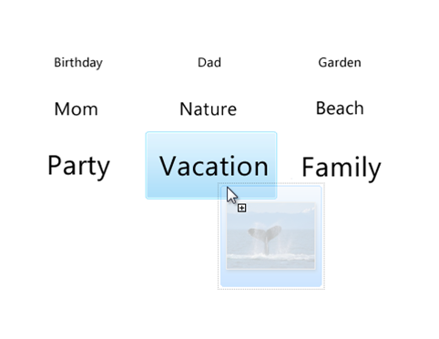

Senior Product Designer, Microsoft
Designed the photo management and sharing experience for Windows Live Photo Gallery. Created intuitive workflows for importing, organizing, editing, and sharing photos across the Windows Live ecosystem.
Windows Live Photo Gallery was part of the Windows Live suite, providing consumers with powerful tools to import, organize, edit, and share their digital photos. The challenge was making professional-quality photo management accessible to everyday users.
Designed the import wizard to make getting photos from cameras and devices seamless and organized.

Created sharing experiences that connected the desktop application to online services, including web-based slideshows and social sharing.


Led innovation initiatives exploring future directions for photo management and organization.


Created detailed specifications ensuring design intent was preserved through implementation.